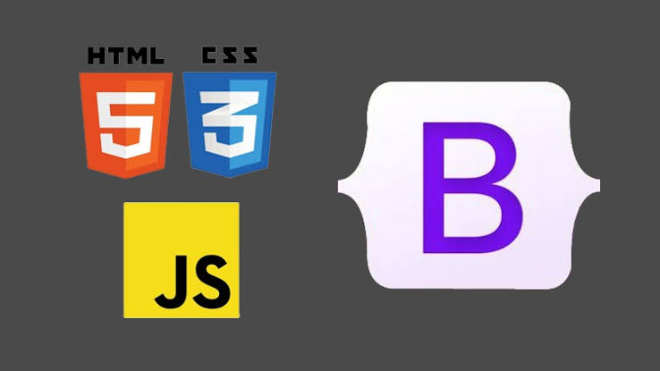

This is a comprehensive review of the introduction to software development course at refactory taught by Samson Kapeyi
Introduction to Software Development was enlightening and exceeded all my expectations. From the very start, the course structure demonstrated a perfect blend of theoretical knowledge and practical application, making complex concepts easily digestible
It was a detailed dive into the world of software engineering that was challenging enough to keep you hooked but not so much as to throw you overboard The course structure was thoughtfully organized, offering a step-by-step guide to mastering HTML, CSS, and Bootstrap. Each module built upon the previous one, ensuring a smooth progression of learning and a solid understanding of core concepts.

One of the most commendable aspects of the course was the Samson's expertise and passion for the subject matter. His engaging teaching style kept me captivated throughout each session. It was evident that he is not only well-versed in software engineering principles but also deeply committed to nurturing students' understanding and enthusiasm.
What truly set this course apart was its emphasis on hands-on learning. Through interactive classes I had the opportunity to put theory into practice and gain invaluable experience working on mini HTML projects. This practical approach not only solidified my understanding of key concepts but also equipped me with the skills and confidence needed to tackle real-world software engineering challenges
Furthermore, the incorporation of Bootstrap into the curriculum was a game-changer. Learning to leverage Bootstrap's powerful CSS framework for rapid prototyping and responsive design not only streamlined my workflow but also elevated the quality of my web projects. The ability to create visually stunning and mobile-friendly websites with minimal effort was truly empowering.